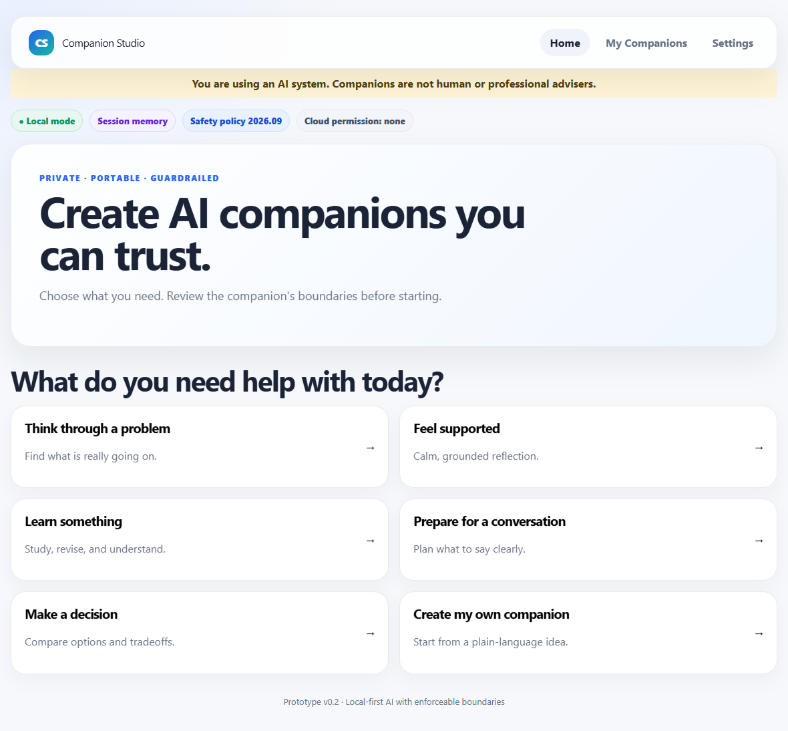
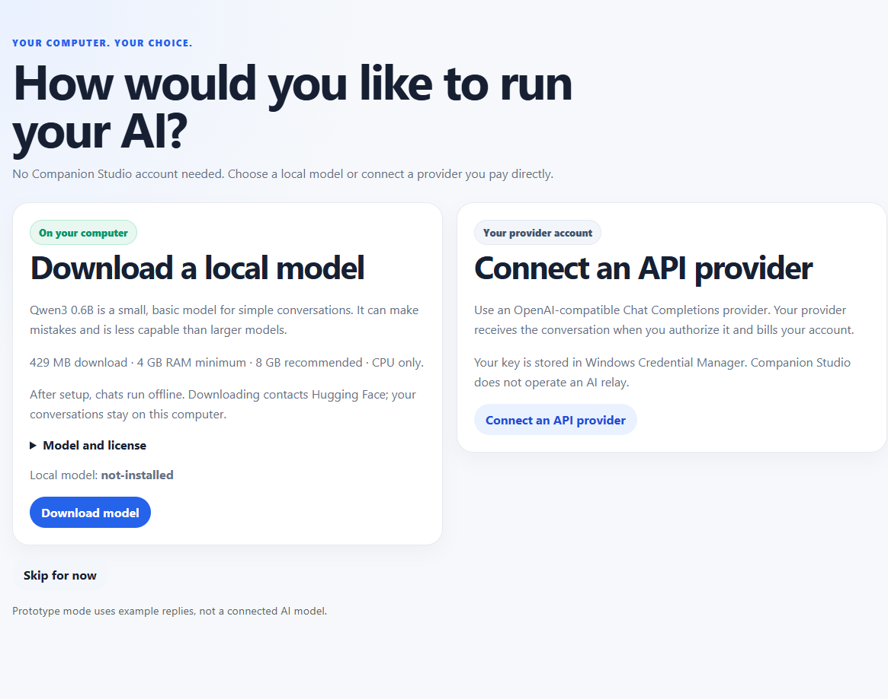

A study coach. A sounding board. A clearer next step. Create AI companions for everyday thinking, with a model on your computer or a provider you choose.
Windows x64 & macOS arm64 · No Companion Studio account · Local or bring your own API key
● ● ●Companion Studio / choose what you needWindows

Real app screen. You choose the companion and review its boundaries before starting.
Two ways in
Your AI. Your engine.
Choose at first launch. Change your mind in Settings.
01 / STAY LOCAL
Download once. Think offline.
The app downloads a small Qwen3 model and runs it for you. No terminal. No separate model server. After setup, local conversations need no internet.
429 MB model download from Hugging Face
4 GB RAM minimum; 8 GB recommended
CPU runtime included in the installer
A basic model for simple conversations
Conversations stay on your computer02 / BRING YOUR KEY
Your provider. Your account.
Connect an OpenAI-compatible Chat Completions API using its base URL, model name, and your key. Your requests go directly to that provider.
Internet connection required
Your provider bills your usage
Key stored in Windows Credential Manager
Permission requested before API chat
No Companion Studio inference relay
Made to get you started
A choice. A download. A conversation.
Clear progress, retry controls, and a visible engine status. Or skip setup and explore with explicitly labelled example replies.

Know where your words go
Privacy should be easy to understand.
Local means local
The installed model processes chats on your computer. Conversation content is encrypted in the app’s local database. Saving companion memory requires explicit consent.
API means your provider
When you authorize API processing, companion instructions and conversation messages go to your configured provider. Its pricing and data policies apply. Permission can be revoked for future requests.
Clear limits
AI can make mistakes. These companions are not people, therapists, or professional advisers. Sensitive-content checks can miss information; use local mode for conversations you want to keep on your computer.
The app contacts Hugging Face when you download a model. Windows setup may download WebView2 if it is missing. This website has no accounts, analytics scripts, chat, or API-key forms. Your chosen web host may keep standard access logs.
Your next step
Make room for a clearer thought.
Companion Studio 0.3.0 · Windows 10/11 x64 · Preview release
Installer includes the runtime. The optional model downloads inside the app. Preview installers are unsigned; your system may show publisher warnings.